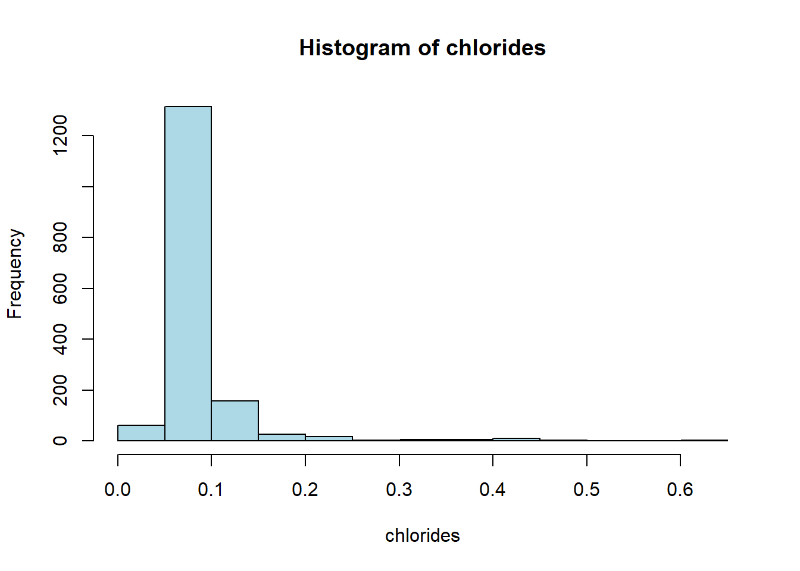
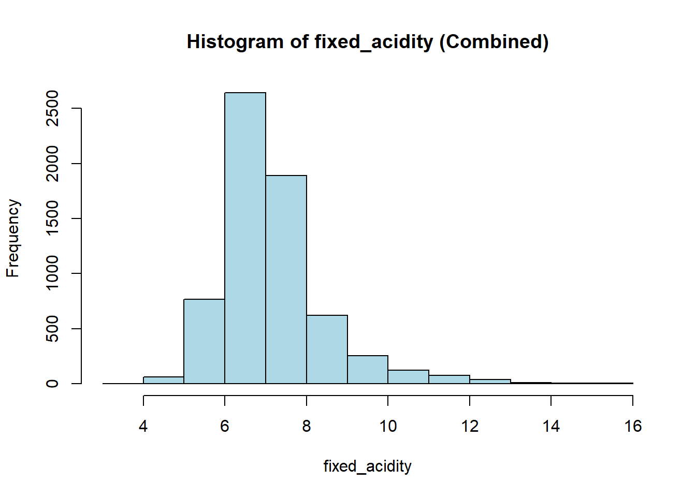
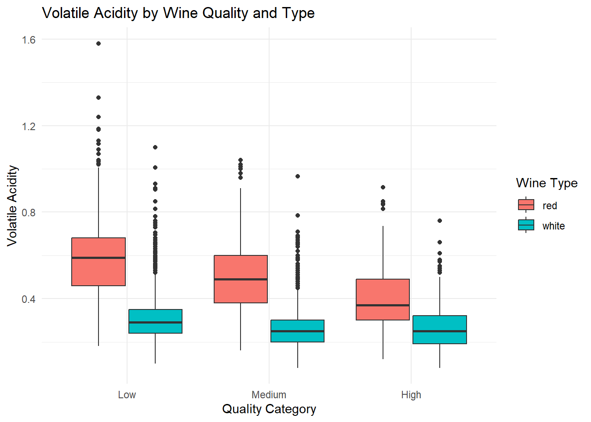
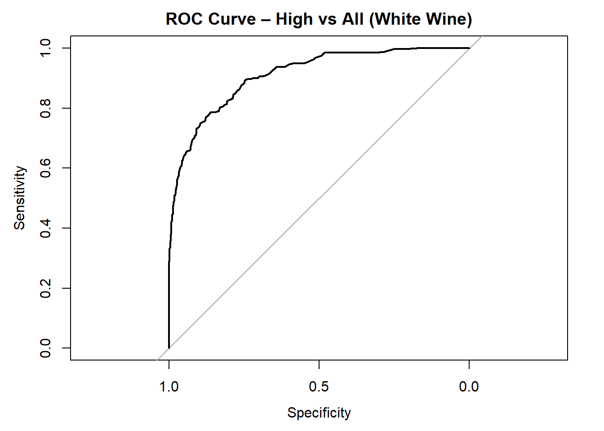

# Install required packages if not already installed
options(repos = c(CRAN = "https://cran.rstudio.com"))
if (!require(tidyverse)) install.packages("tidyverse")
if (!require(janitor)) install.packages("janitor")
if (!require(GGally)) install.packages("GGally")
if (!require(skimr)) install.packages("skimr")
if (!require(DataExplorer)) install.packages("DataExplorer")
if (!require(caret)) install.packages("caret")
if (!require(ROSE)) install.packages("ROSE")
if (!require(recipes)) install.packages("recipes")
if (!require(nnet)) install.packages("nnet")
if (!require(DMwR2)) install.packages("DMwR2")
if (!require(e1071)) install.packages("e1071")
if (!require(randomForest)) install.packages("randomForest")
if (!require(rpart.plot)) install.packages("rpart.plot")
if (!require(yardstick)) install.packages("yardstick")
if (!require(rsample)) install.packages("rsample")
if (!require(caretEnsemble)) install.packages("caretEnsemble")
if (!require(corrplot)) install.packages("corrplot")
if (!require(factoextra)) install.packages("factoextra")
if (!require(keras)) install.packages("keras")
if (!require(tensorflow)) install.packages("tensorfLow")
if (!require(glmnet)) install.packages("glmnet")
if (!require(reshape2)) install.packages("reshape2")
# load libraries
library(tidyverse)
library(janitor)
library(GGally)
library(skimr)
library(DataExplorer)
library(caret)
library(recipes)
library(ROSE)
#library(DMwR2)
library(e1071)
library(randomForest)
library(rpart)
library(rpart.plot)
library(nnet)
library(keras)
library(tensorflow)
library(glmnet)
library(pROC)
library(yardstick)
library(cvms)
library(rsample)
library(caretEnsemble)
library(corrplot)
library(factoextra)
library(reshape2)Wine Predictor
Clean and Modify Wine Data
Red Wine
# Load and clean red wine data
red_wine_cleaned <- read_delim("winequality-red.csv", delim = ";") %>%
clean_names() %>%
filter(if_all(everything(), ~ !is.na(.))) %>%
mutate(
# Convert 'quality' from numerical variable to categorical variable
quality_category = case_when(
quality <= 5 ~ "Low",
quality == 6 ~ "Medium",
quality >= 7 ~ "High"
),
quality_category = factor(quality_category, levels = c("Low", "Medium", "High")),
# Add 'type' column to id Wine
type = "red"
) %>%
filter(!is.na(quality_category))
# View the result
head(red_wine_cleaned)# A tibble: 6 × 14
fixed_acidity volatile_acidity citric_acid residual_sugar chlorides
<dbl> <dbl> <dbl> <dbl> <dbl>
1 7.4 0.7 0 1.9 0.076
2 7.8 0.88 0 2.6 0.098
3 7.8 0.76 0.04 2.3 0.092
4 11.2 0.28 0.56 1.9 0.075
5 7.4 0.7 0 1.9 0.076
6 7.4 0.66 0 1.8 0.075
# ℹ 9 more variables: free_sulfur_dioxide <dbl>, total_sulfur_dioxide <dbl>,
# density <dbl>, p_h <dbl>, sulphates <dbl>, alcohol <dbl>, quality <dbl>,
# quality_category <fct>, type <chr>table(red_wine_cleaned$quality_category)
Low Medium High
744 638 217 White Wine
# Load and clean white wine data
white_wine_cleaned <- read_delim("winequality-white.csv", delim = ";") %>%
clean_names() %>%
filter(if_all(everything(), ~ !is.na(.))) %>%
mutate(
# Convert 'quality' from numerical variable to categorical variable
quality_category = case_when(
quality <= 5 ~ "Low",
quality == 6 ~ "Medium",
quality >= 7 ~ "High"
),
quality_category = factor(quality_category, levels = c("Low", "Medium", "High")),
# Add 'type' column to id Wine
type = "white"
) %>%
filter(!is.na(quality_category))
# View the result
head(white_wine_cleaned)# A tibble: 6 × 14
fixed_acidity volatile_acidity citric_acid residual_sugar chlorides
<dbl> <dbl> <dbl> <dbl> <dbl>
1 7 0.27 0.36 20.7 0.045
2 6.3 0.3 0.34 1.6 0.049
3 8.1 0.28 0.4 6.9 0.05
4 7.2 0.23 0.32 8.5 0.058
5 7.2 0.23 0.32 8.5 0.058
6 8.1 0.28 0.4 6.9 0.05
# ℹ 9 more variables: free_sulfur_dioxide <dbl>, total_sulfur_dioxide <dbl>,
# density <dbl>, p_h <dbl>, sulphates <dbl>, alcohol <dbl>, quality <dbl>,
# quality_category <fct>, type <chr>table(white_wine_cleaned$quality_category)
Low Medium High
1640 2198 1060 Red Wine and White Wine Combined
# Combining both datasets
combined_wine <- bind_rows(red_wine_cleaned, white_wine_cleaned)
# Check the result
head(combined_wine)# A tibble: 6 × 14
fixed_acidity volatile_acidity citric_acid residual_sugar chlorides
<dbl> <dbl> <dbl> <dbl> <dbl>
1 7.4 0.7 0 1.9 0.076
2 7.8 0.88 0 2.6 0.098
3 7.8 0.76 0.04 2.3 0.092
4 11.2 0.28 0.56 1.9 0.075
5 7.4 0.7 0 1.9 0.076
6 7.4 0.66 0 1.8 0.075
# ℹ 9 more variables: free_sulfur_dioxide <dbl>, total_sulfur_dioxide <dbl>,
# density <dbl>, p_h <dbl>, sulphates <dbl>, alcohol <dbl>, quality <dbl>,
# quality_category <fct>, type <chr>table(combined_wine$type)
red white
1599 4898 table(combined_wine$quality_category, combined_wine$type)
red white
Low 744 1640
Medium 638 2198
High 217 1060Explatoratory Data Analysis
Red Wine
#Explatoratory Data Analysis
#Red Wine
# Summarize
summary(red_wine_cleaned) fixed_acidity volatile_acidity citric_acid residual_sugar
Min. : 4.60 Min. :0.1200 Min. :0.000 Min. : 0.900
1st Qu.: 7.10 1st Qu.:0.3900 1st Qu.:0.090 1st Qu.: 1.900
Median : 7.90 Median :0.5200 Median :0.260 Median : 2.200
Mean : 8.32 Mean :0.5278 Mean :0.271 Mean : 2.539
3rd Qu.: 9.20 3rd Qu.:0.6400 3rd Qu.:0.420 3rd Qu.: 2.600
Max. :15.90 Max. :1.5800 Max. :1.000 Max. :15.500
chlorides free_sulfur_dioxide total_sulfur_dioxide density
Min. :0.01200 Min. : 1.00 Min. : 6.00 Min. :0.9901
1st Qu.:0.07000 1st Qu.: 7.00 1st Qu.: 22.00 1st Qu.:0.9956
Median :0.07900 Median :14.00 Median : 38.00 Median :0.9968
Mean :0.08747 Mean :15.87 Mean : 46.47 Mean :0.9967
3rd Qu.:0.09000 3rd Qu.:21.00 3rd Qu.: 62.00 3rd Qu.:0.9978
Max. :0.61100 Max. :72.00 Max. :289.00 Max. :1.0037
p_h sulphates alcohol quality
Min. :2.740 Min. :0.3300 Min. : 8.40 Min. :3.000
1st Qu.:3.210 1st Qu.:0.5500 1st Qu.: 9.50 1st Qu.:5.000
Median :3.310 Median :0.6200 Median :10.20 Median :6.000
Mean :3.311 Mean :0.6581 Mean :10.42 Mean :5.636
3rd Qu.:3.400 3rd Qu.:0.7300 3rd Qu.:11.10 3rd Qu.:6.000
Max. :4.010 Max. :2.0000 Max. :14.90 Max. :8.000
quality_category type
Low :744 Length:1599
Medium:638 Class :character
High :217 Mode :character
str(red_wine_cleaned)tibble [1,599 × 14] (S3: tbl_df/tbl/data.frame)
$ fixed_acidity : num [1:1599] 7.4 7.8 7.8 11.2 7.4 7.4 7.9 7.3 7.8 7.5 ...
$ volatile_acidity : num [1:1599] 0.7 0.88 0.76 0.28 0.7 0.66 0.6 0.65 0.58 0.5 ...
$ citric_acid : num [1:1599] 0 0 0.04 0.56 0 0 0.06 0 0.02 0.36 ...
$ residual_sugar : num [1:1599] 1.9 2.6 2.3 1.9 1.9 1.8 1.6 1.2 2 6.1 ...
$ chlorides : num [1:1599] 0.076 0.098 0.092 0.075 0.076 0.075 0.069 0.065 0.073 0.071 ...
$ free_sulfur_dioxide : num [1:1599] 11 25 15 17 11 13 15 15 9 17 ...
$ total_sulfur_dioxide: num [1:1599] 34 67 54 60 34 40 59 21 18 102 ...
$ density : num [1:1599] 0.998 0.997 0.997 0.998 0.998 ...
$ p_h : num [1:1599] 3.51 3.2 3.26 3.16 3.51 3.51 3.3 3.39 3.36 3.35 ...
$ sulphates : num [1:1599] 0.56 0.68 0.65 0.58 0.56 0.56 0.46 0.47 0.57 0.8 ...
$ alcohol : num [1:1599] 9.4 9.8 9.8 9.8 9.4 9.4 9.4 10 9.5 10.5 ...
$ quality : num [1:1599] 5 5 5 6 5 5 5 7 7 5 ...
$ quality_category : Factor w/ 3 levels "Low","Medium",..: 1 1 1 2 1 1 1 3 3 1 ...
$ type : chr [1:1599] "red" "red" "red" "red" ...skimr::skim(red_wine_cleaned)| Name | red_wine_cleaned |
| Number of rows | 1599 |
| Number of columns | 14 |
| _______________________ | |
| Column type frequency: | |
| character | 1 |
| factor | 1 |
| numeric | 12 |
| ________________________ | |
| Group variables | None |
Variable type: character
| skim_variable | n_missing | complete_rate | min | max | empty | n_unique | whitespace |
|---|---|---|---|---|---|---|---|
| type | 0 | 1 | 3 | 3 | 0 | 1 | 0 |
Variable type: factor
| skim_variable | n_missing | complete_rate | ordered | n_unique | top_counts |
|---|---|---|---|---|---|
| quality_category | 0 | 1 | FALSE | 3 | Low: 744, Med: 638, Hig: 217 |
Variable type: numeric
| skim_variable | n_missing | complete_rate | mean | sd | p0 | p25 | p50 | p75 | p100 | hist |
|---|---|---|---|---|---|---|---|---|---|---|
| fixed_acidity | 0 | 1 | 8.32 | 1.74 | 4.60 | 7.10 | 7.90 | 9.20 | 15.90 | ▂▇▂▁▁ |
| volatile_acidity | 0 | 1 | 0.53 | 0.18 | 0.12 | 0.39 | 0.52 | 0.64 | 1.58 | ▅▇▂▁▁ |
| citric_acid | 0 | 1 | 0.27 | 0.19 | 0.00 | 0.09 | 0.26 | 0.42 | 1.00 | ▇▆▅▁▁ |
| residual_sugar | 0 | 1 | 2.54 | 1.41 | 0.90 | 1.90 | 2.20 | 2.60 | 15.50 | ▇▁▁▁▁ |
| chlorides | 0 | 1 | 0.09 | 0.05 | 0.01 | 0.07 | 0.08 | 0.09 | 0.61 | ▇▁▁▁▁ |
| free_sulfur_dioxide | 0 | 1 | 15.87 | 10.46 | 1.00 | 7.00 | 14.00 | 21.00 | 72.00 | ▇▅▁▁▁ |
| total_sulfur_dioxide | 0 | 1 | 46.47 | 32.90 | 6.00 | 22.00 | 38.00 | 62.00 | 289.00 | ▇▂▁▁▁ |
| density | 0 | 1 | 1.00 | 0.00 | 0.99 | 1.00 | 1.00 | 1.00 | 1.00 | ▁▃▇▂▁ |
| p_h | 0 | 1 | 3.31 | 0.15 | 2.74 | 3.21 | 3.31 | 3.40 | 4.01 | ▁▅▇▂▁ |
| sulphates | 0 | 1 | 0.66 | 0.17 | 0.33 | 0.55 | 0.62 | 0.73 | 2.00 | ▇▅▁▁▁ |
| alcohol | 0 | 1 | 10.42 | 1.07 | 8.40 | 9.50 | 10.20 | 11.10 | 14.90 | ▇▇▃▁▁ |
| quality | 0 | 1 | 5.64 | 0.81 | 3.00 | 5.00 | 6.00 | 6.00 | 8.00 | ▁▇▇▂▁ |
# Check class balance of target variable
table(red_wine_cleaned$quality_category)
Low Medium High
744 638 217 # Bar chart
ggplot(red_wine_cleaned, aes(x = quality_category)) +
geom_bar(fill = "skyblue") +
labs(
title = "Distribution of Wine Quality Categories (Red Wine)",
x = "Quality Category",
y = "Count"
)# Correlation plot
numeric_data <- red_wine_cleaned %>% select(where(is.numeric))
cor_matrix <- cor(numeric_data, use = "complete.obs")
corrplot(cor_matrix,
method = "color",
type = "upper",
tl.col = "black",
tl.cex = 0.8,
addCoef.col = "black",
number.cex = 0.7,
diag = FALSE)wine_vars <- c(
"fixed_acidity", "volatile_acidity", "citric_acid", "residual_sugar",
"chlorides", "free_sulfur_dioxide", "total_sulfur_dioxide",
"density", "p_h", "sulphates", "alcohol"
)
for (var in wine_vars) {
if (var %in% names(red_wine_cleaned) && is.numeric(red_wine_cleaned[[var]])) {
# Histogram
hist(red_wine_cleaned[[var]],
main = paste("Histogram of", var),
xlab = var,
col = "lightblue")
# Box plot
boxplot(red_wine_cleaned[[var]],
main = paste("Boxplot of", var),
ylab = var,
col = "tomato")
}
}


wine_vars <- c(
"fixed_acidity", "volatile_acidity", "citric_acid", "residual_sugar",
"chlorides", "free_sulfur_dioxide", "total_sulfur_dioxide",
"density", "p_h", "sulphates", "alcohol"
)
for (var in wine_vars) {
if (var %in% names(red_wine_cleaned) && is.numeric(red_wine_cleaned[[var]])) {
# Skewness
skw <- skewness(red_wine_cleaned[[var]], na.rm = TRUE)
print(paste("Skewness of", var, "=", round(skw, 3)))
}
}[1] "Skewness of fixed_acidity = 0.981"
[1] "Skewness of volatile_acidity = 0.67"
[1] "Skewness of citric_acid = 0.318"
[1] "Skewness of residual_sugar = 4.532"
[1] "Skewness of chlorides = 5.67"
[1] "Skewness of free_sulfur_dioxide = 1.248"
[1] "Skewness of total_sulfur_dioxide = 1.513"
[1] "Skewness of density = 0.071"
[1] "Skewness of p_h = 0.193"
[1] "Skewness of sulphates = 2.424"
[1] "Skewness of alcohol = 0.859"# Boxplot: Alcohol by Quality and Type
ggplot(red_wine_cleaned, aes(x = quality_category, y = alcohol, fill = type)) +
geom_boxplot(position = position_dodge(width = 0.8)) +
labs(
title = "Alcohol Content by Wine Quality and Type",
x = "Quality Category",
y = "Alcohol (%)",
fill = "Wine Type"
) +
theme_minimal()# Boxplot: Volatile Acidity by Quality and Type
ggplot(red_wine_cleaned, aes(x = quality_category, y = volatile_acidity, fill = type)) +
geom_boxplot(position = position_dodge(width = 0.8)) +
labs(
title = "Volatile Acidity by Wine Quality and Type",
x = "Quality Category",
y = "Volatile Acidity",
fill = "Wine Type"
) +
theme_minimal()# Boxplot: Sulphates by Quality and Type
ggplot(red_wine_cleaned, aes(x = quality_category, y = sulphates, fill = type)) +
geom_boxplot(position = position_dodge(width = 0.8)) +
labs(
title = "Sulphates by Wine Quality and Type",
x = "Quality Category",
y = "Sulphates",
fill = "Wine Type"
) +
theme_minimal()# Summary of Box Plots
red_wine_cleaned %>%
group_by(type, quality_category) %>%
summarise(
mean_alcohol = mean(alcohol, na.rm = TRUE),
median_alcohol = median(alcohol, na.rm = TRUE),
q1_alcohol = quantile(alcohol, 0.25, na.rm = TRUE),
q3_alcohol = quantile(alcohol, 0.75, na.rm = TRUE),
mean_volatile_acidity = mean(volatile_acidity, na.rm = TRUE),
median_volatile_acidity = median(volatile_acidity, na.rm = TRUE),
q1_volatile_acidity = quantile(volatile_acidity, 0.25, na.rm = TRUE),
q3_volatile_acidity = quantile(volatile_acidity, 0.75, na.rm = TRUE),
mean_sulphates = mean(sulphates, na.rm = TRUE),
median_sulphates = median(sulphates, na.rm = TRUE),
q1_sulphates = quantile(sulphates, 0.25, na.rm = TRUE),
q3_sulphates = quantile(sulphates, 0.75, na.rm = TRUE)
) %>%
arrange(type, quality_category)# A tibble: 3 × 14
# Groups: type [1]
type quality_category mean_alcohol median_alcohol q1_alcohol q3_alcohol
<chr> <fct> <dbl> <dbl> <dbl> <dbl>
1 red Low 9.93 9.7 9.4 10.3
2 red Medium 10.6 10.5 9.8 11.3
3 red High 11.5 11.6 10.8 12.2
# ℹ 8 more variables: mean_volatile_acidity <dbl>,
# median_volatile_acidity <dbl>, q1_volatile_acidity <dbl>,
# q3_volatile_acidity <dbl>, mean_sulphates <dbl>, median_sulphates <dbl>,
# q1_sulphates <dbl>, q3_sulphates <dbl>Grouped box plots of the top predictors (alcohol, volatile acidity, sulphates) by quality and type, generated based on their importance in the Random Forest variable importance plot. Ggplot was used as it can be used for multiple variable simultaneously.
# Filtering top variables
top_vars_red <- red_wine_cleaned %>%
select(alcohol, volatile_acidity, sulphates, quality_category, type)
# Pairwise scatter plot matrix
ggpairs(
top_vars_red,
columns = 1:3,
mapping = aes(color = quality_category, shape = type),
upper = list(continuous = "points"),
lower = list(continuous = "smooth"),
diag = list(continuous = "densityDiag")
)A pairwise scatter plot matrix of the top predictors based off the variable importance plot was generated to illustrate how these variables interact and if these combinations help distinguish wine quality or type.
# Density plot: Alcohol
ggplot(red_wine_cleaned, aes(x = alcohol, fill = quality_category)) +
geom_density(alpha = 0.6) +
facet_wrap(~type) +
labs(
title = "Alcohol Distribution by Wine Quality and Type",
x = "Alcohol (%)",
y = "Density",
fill = "Quality"
) +
theme_minimal()# Density plot: Volatile Acidity
ggplot(red_wine_cleaned, aes(x = volatile_acidity, fill = quality_category)) +
geom_density(alpha = 0.6) +
facet_wrap(~type) +
labs(
title = "Volatile Acidity Distribution by Wine Quality and Type",
x = "Volatile Acidity",
y = "Density",
fill = "Quality"
) +
theme_minimal()# Density plot: Sulphates
ggplot(red_wine_cleaned, aes(x = sulphates, fill = quality_category)) +
geom_density(alpha = 0.6) +
facet_wrap(~type) +
labs(
title = "Sulphates Distribution by Wine Quality and Type",
x = "Sulphates",
y = "Density",
fill = "Quality"
) +
theme_minimal()# Density plot: pH
ggplot(red_wine_cleaned, aes(x = p_h, fill = quality_category)) +
geom_density(alpha = 0.6) +
facet_wrap(~type) +
labs(
title = "pH Distribution by Wine Quality and Type",
x = "pH",
y = "Density",
fill = "Quality"
) +
theme_minimal()Density plots of the top predictors by quality and type were generated to visualize how the distribution shapes differ across quality levels and to show whether the groups are separated or overlapping. This helps convey how much these variables contribute to distinguishing wine quality and is essentially an illustration of what is summarized in the variable importance plot.
# Heat Map
num_vars <- red_wine_cleaned %>%
select(where(is.numeric)) %>%
select(-quality)
cor_mat <- cor(num_vars, use = "pairwise.complete.obs")
melted_cor <- melt(cor_mat)
ggplot(melted_cor, aes(Var1, Var2, fill = value)) +
geom_tile(color = "white") +
scale_fill_gradient2(
low = "#b2182b", mid = "white", high = "#2166ac", midpoint = 0,
limit = c(-1, 1), space = "Lab"
) +
labs(
title = "Correlation Heatmap of Numeric Features",
x = "",
y = "",
fill = "Correlation"
) +
theme_minimal() +
theme(axis.text.x = element_text(angle = 45, hjust = 1))A correlation heat map created to show the relationship between variable.
White Wine
# Summarize
summary(white_wine_cleaned) fixed_acidity volatile_acidity citric_acid residual_sugar
Min. : 3.800 Min. :0.0800 Min. :0.0000 Min. : 0.600
1st Qu.: 6.300 1st Qu.:0.2100 1st Qu.:0.2700 1st Qu.: 1.700
Median : 6.800 Median :0.2600 Median :0.3200 Median : 5.200
Mean : 6.855 Mean :0.2782 Mean :0.3342 Mean : 6.391
3rd Qu.: 7.300 3rd Qu.:0.3200 3rd Qu.:0.3900 3rd Qu.: 9.900
Max. :14.200 Max. :1.1000 Max. :1.6600 Max. :65.800
chlorides free_sulfur_dioxide total_sulfur_dioxide density
Min. :0.00900 Min. : 2.00 Min. : 9.0 Min. :0.9871
1st Qu.:0.03600 1st Qu.: 23.00 1st Qu.:108.0 1st Qu.:0.9917
Median :0.04300 Median : 34.00 Median :134.0 Median :0.9937
Mean :0.04577 Mean : 35.31 Mean :138.4 Mean :0.9940
3rd Qu.:0.05000 3rd Qu.: 46.00 3rd Qu.:167.0 3rd Qu.:0.9961
Max. :0.34600 Max. :289.00 Max. :440.0 Max. :1.0390
p_h sulphates alcohol quality
Min. :2.720 Min. :0.2200 Min. : 8.00 Min. :3.000
1st Qu.:3.090 1st Qu.:0.4100 1st Qu.: 9.50 1st Qu.:5.000
Median :3.180 Median :0.4700 Median :10.40 Median :6.000
Mean :3.188 Mean :0.4898 Mean :10.51 Mean :5.878
3rd Qu.:3.280 3rd Qu.:0.5500 3rd Qu.:11.40 3rd Qu.:6.000
Max. :3.820 Max. :1.0800 Max. :14.20 Max. :9.000
quality_category type
Low :1640 Length:4898
Medium:2198 Class :character
High :1060 Mode :character
str(white_wine_cleaned)tibble [4,898 × 14] (S3: tbl_df/tbl/data.frame)
$ fixed_acidity : num [1:4898] 7 6.3 8.1 7.2 7.2 8.1 6.2 7 6.3 8.1 ...
$ volatile_acidity : num [1:4898] 0.27 0.3 0.28 0.23 0.23 0.28 0.32 0.27 0.3 0.22 ...
$ citric_acid : num [1:4898] 0.36 0.34 0.4 0.32 0.32 0.4 0.16 0.36 0.34 0.43 ...
$ residual_sugar : num [1:4898] 20.7 1.6 6.9 8.5 8.5 6.9 7 20.7 1.6 1.5 ...
$ chlorides : num [1:4898] 0.045 0.049 0.05 0.058 0.058 0.05 0.045 0.045 0.049 0.044 ...
$ free_sulfur_dioxide : num [1:4898] 45 14 30 47 47 30 30 45 14 28 ...
$ total_sulfur_dioxide: num [1:4898] 170 132 97 186 186 97 136 170 132 129 ...
$ density : num [1:4898] 1.001 0.994 0.995 0.996 0.996 ...
$ p_h : num [1:4898] 3 3.3 3.26 3.19 3.19 3.26 3.18 3 3.3 3.22 ...
$ sulphates : num [1:4898] 0.45 0.49 0.44 0.4 0.4 0.44 0.47 0.45 0.49 0.45 ...
$ alcohol : num [1:4898] 8.8 9.5 10.1 9.9 9.9 10.1 9.6 8.8 9.5 11 ...
$ quality : num [1:4898] 6 6 6 6 6 6 6 6 6 6 ...
$ quality_category : Factor w/ 3 levels "Low","Medium",..: 2 2 2 2 2 2 2 2 2 2 ...
$ type : chr [1:4898] "white" "white" "white" "white" ...skimr::skim(white_wine_cleaned)| Name | white_wine_cleaned |
| Number of rows | 4898 |
| Number of columns | 14 |
| _______________________ | |
| Column type frequency: | |
| character | 1 |
| factor | 1 |
| numeric | 12 |
| ________________________ | |
| Group variables | None |
Variable type: character
| skim_variable | n_missing | complete_rate | min | max | empty | n_unique | whitespace |
|---|---|---|---|---|---|---|---|
| type | 0 | 1 | 5 | 5 | 0 | 1 | 0 |
Variable type: factor
| skim_variable | n_missing | complete_rate | ordered | n_unique | top_counts |
|---|---|---|---|---|---|
| quality_category | 0 | 1 | FALSE | 3 | Med: 2198, Low: 1640, Hig: 1060 |
Variable type: numeric
| skim_variable | n_missing | complete_rate | mean | sd | p0 | p25 | p50 | p75 | p100 | hist |
|---|---|---|---|---|---|---|---|---|---|---|
| fixed_acidity | 0 | 1 | 6.85 | 0.84 | 3.80 | 6.30 | 6.80 | 7.30 | 14.20 | ▁▇▁▁▁ |
| volatile_acidity | 0 | 1 | 0.28 | 0.10 | 0.08 | 0.21 | 0.26 | 0.32 | 1.10 | ▇▅▁▁▁ |
| citric_acid | 0 | 1 | 0.33 | 0.12 | 0.00 | 0.27 | 0.32 | 0.39 | 1.66 | ▇▆▁▁▁ |
| residual_sugar | 0 | 1 | 6.39 | 5.07 | 0.60 | 1.70 | 5.20 | 9.90 | 65.80 | ▇▁▁▁▁ |
| chlorides | 0 | 1 | 0.05 | 0.02 | 0.01 | 0.04 | 0.04 | 0.05 | 0.35 | ▇▁▁▁▁ |
| free_sulfur_dioxide | 0 | 1 | 35.31 | 17.01 | 2.00 | 23.00 | 34.00 | 46.00 | 289.00 | ▇▁▁▁▁ |
| total_sulfur_dioxide | 0 | 1 | 138.36 | 42.50 | 9.00 | 108.00 | 134.00 | 167.00 | 440.00 | ▂▇▂▁▁ |
| density | 0 | 1 | 0.99 | 0.00 | 0.99 | 0.99 | 0.99 | 1.00 | 1.04 | ▇▂▁▁▁ |
| p_h | 0 | 1 | 3.19 | 0.15 | 2.72 | 3.09 | 3.18 | 3.28 | 3.82 | ▁▇▇▂▁ |
| sulphates | 0 | 1 | 0.49 | 0.11 | 0.22 | 0.41 | 0.47 | 0.55 | 1.08 | ▃▇▂▁▁ |
| alcohol | 0 | 1 | 10.51 | 1.23 | 8.00 | 9.50 | 10.40 | 11.40 | 14.20 | ▃▇▆▃▁ |
| quality | 0 | 1 | 5.88 | 0.89 | 3.00 | 5.00 | 6.00 | 6.00 | 9.00 | ▁▅▇▃▁ |
# Check class balance of target variable
table(white_wine_cleaned$quality_category)
Low Medium High
1640 2198 1060 # Bar chart
ggplot(white_wine_cleaned, aes(x = quality_category)) +
geom_bar(fill = "skyblue") +
labs(
title = "Distribution of Wine Quality Categories (White Wine)",
x = "Quality Category",
y = "Count"
)# Correlation plot
numeric_data <- white_wine_cleaned %>% select(where(is.numeric))
cor_matrix <- cor(numeric_data, use = "complete.obs")
corrplot(cor_matrix,
method = "color",
type = "upper",
tl.col = "black",
tl.cex = 0.8,
addCoef.col = "black",
number.cex = 0.7,
diag = FALSE)wine_vars <- c(
"fixed_acidity", "volatile_acidity", "citric_acid", "residual_sugar",
"chlorides", "free_sulfur_dioxide", "total_sulfur_dioxide",
"density", "p_h", "sulphates", "alcohol"
)
for (var in wine_vars) {
if (var %in% names(white_wine_cleaned) && is.numeric(white_wine_cleaned[[var]])) {
# Histogram
hist(white_wine_cleaned[[var]],
main = paste("Histogram of", var),
xlab = var,
col = "lightblue")
# Box plot
boxplot(white_wine_cleaned[[var]],
main = paste("Boxplot of", var),
ylab = var,
col = "tomato")
}
}wine_vars <- c(
"fixed_acidity", "volatile_acidity", "citric_acid", "residual_sugar",
"chlorides", "free_sulfur_dioxide", "total_sulfur_dioxide",
"density", "p_h", "sulphates", "alcohol"
)
for (var in wine_vars) {
if (var %in% names(white_wine_cleaned) && is.numeric(white_wine_cleaned[[var]])) {
# Skewness
skw <- skewness(white_wine_cleaned[[var]], na.rm = TRUE)
print(paste("Skewness of", var, "=", round(skw, 3)))
}
}[1] "Skewness of fixed_acidity = 0.647"
[1] "Skewness of volatile_acidity = 1.576"
[1] "Skewness of citric_acid = 1.281"
[1] "Skewness of residual_sugar = 1.076"
[1] "Skewness of chlorides = 5.02"
[1] "Skewness of free_sulfur_dioxide = 1.406"
[1] "Skewness of total_sulfur_dioxide = 0.39"
[1] "Skewness of density = 0.977"
[1] "Skewness of p_h = 0.458"
[1] "Skewness of sulphates = 0.977"
[1] "Skewness of alcohol = 0.487"# Boxplot: Alcohol by Quality and Type
ggplot(white_wine_cleaned, aes(x = quality_category, y = alcohol, fill = type)) +
geom_boxplot(position = position_dodge(width = 0.8)) +
labs(
title = "Alcohol Content by Wine Quality and Type",
x = "Quality Category",
y = "Alcohol (%)",
fill = "Wine Type"
) +
theme_minimal()# Boxplot: Volatile Acidity by Quality and Type
ggplot(white_wine_cleaned, aes(x = quality_category, y = volatile_acidity, fill = type)) +
geom_boxplot(position = position_dodge(width = 0.8)) +
labs(
title = "Volatile Acidity by Wine Quality and Type",
x = "Quality Category",
y = "Volatile Acidity",
fill = "Wine Type"
) +
theme_minimal()# Boxplot: Sulphates by Quality and Type
ggplot(white_wine_cleaned, aes(x = quality_category, y = sulphates, fill = type)) +
geom_boxplot(position = position_dodge(width = 0.8)) +
labs(
title = "Sulphates by Wine Quality and Type",
x = "Quality Category",
y = "Sulphates",
fill = "Wine Type"
) +
theme_minimal()# Summary of Box Plots
white_wine_cleaned %>%
group_by(type, quality_category) %>%
summarise(
mean_alcohol = mean(alcohol, na.rm = TRUE),
median_alcohol = median(alcohol, na.rm = TRUE),
q1_alcohol = quantile(alcohol, 0.25, na.rm = TRUE),
q3_alcohol = quantile(alcohol, 0.75, na.rm = TRUE),
mean_volatile_acidity = mean(volatile_acidity, na.rm = TRUE),
median_volatile_acidity = median(volatile_acidity, na.rm = TRUE),
q1_volatile_acidity = quantile(volatile_acidity, 0.25, na.rm = TRUE),
q3_volatile_acidity = quantile(volatile_acidity, 0.75, na.rm = TRUE),
mean_sulphates = mean(sulphates, na.rm = TRUE),
median_sulphates = median(sulphates, na.rm = TRUE),
q1_sulphates = quantile(sulphates, 0.25, na.rm = TRUE),
q3_sulphates = quantile(sulphates, 0.75, na.rm = TRUE)
) %>%
arrange(type, quality_category)# A tibble: 3 × 14
# Groups: type [1]
type quality_category mean_alcohol median_alcohol q1_alcohol q3_alcohol
<chr> <fct> <dbl> <dbl> <dbl> <dbl>
1 white Low 9.85 9.6 9.2 10.4
2 white Medium 10.6 10.5 9.6 11.4
3 white High 11.4 11.5 10.7 12.4
# ℹ 8 more variables: mean_volatile_acidity <dbl>,
# median_volatile_acidity <dbl>, q1_volatile_acidity <dbl>,
# q3_volatile_acidity <dbl>, mean_sulphates <dbl>, median_sulphates <dbl>,
# q1_sulphates <dbl>, q3_sulphates <dbl>Grouped box plots of the top predictors (alcohol, volatile acidity, sulphates) by quality and type, generated based on their importance in the Random Forest variable importance plot. Ggplot was used as it can be used for multiple variable simultaneously.
# filtering top variables
top_vars_white <- white_wine_cleaned %>%
select(alcohol, volatile_acidity, sulphates, quality_category, type)
# Pairwise scatter plot matrix
ggpairs(
top_vars_white,
columns = 1:3,
mapping = aes(color = quality_category, shape = type),
upper = list(continuous = "points"),
lower = list(continuous = "smooth"),
diag = list(continuous = "densityDiag")
)A pairwise scatter plot matrix of the top predictors based off the variable importance plot was generated to illustrate how these variables interact and if these combinations help distinguish wine quality or type.
# Density plot: Alcohol
ggplot(white_wine_cleaned, aes(x = alcohol, fill = quality_category)) +
geom_density(alpha = 0.6) +
facet_wrap(~type) +
labs(
title = "Alcohol Distribution by Wine Quality and Type",
x = "Alcohol (%)",
y = "Density",
fill = "Quality"
) +
theme_minimal()# Density plot: Volatile Acidity
ggplot(white_wine_cleaned, aes(x = volatile_acidity, fill = quality_category)) +
geom_density(alpha = 0.6) +
facet_wrap(~type) +
labs(
title = "Volatile Acidity Distribution by Wine Quality and Type",
x = "Volatile Acidity",
y = "Density",
fill = "Quality"
) +
theme_minimal()# Density plot: Sulphates
ggplot(white_wine_cleaned, aes(x = sulphates, fill = quality_category)) +
geom_density(alpha = 0.6) +
facet_wrap(~type) +
labs(
title = "Sulphates Distribution by Wine Quality and Type",
x = "Sulphates",
y = "Density",
fill = "Quality"
) +
theme_minimal()
# Density plot: pH
ggplot(white_wine_cleaned, aes(x = p_h, fill = quality_category)) +
geom_density(alpha = 0.6) +
facet_wrap(~type) +
labs(
title = "pH Distribution by Wine Quality and Type",
x = "pH",
y = "Density",
fill = "Quality"
) +
theme_minimal()Density plots of the top predictors by quality and type were generated to visualize how the distribution shapes differ across quality levels and to show whether the groups are separated or overlapping. This helps convey how much these variables contribute to distinguishing wine quality and is essentially an illustration of what is summarized in the variable importance plot.
# Heat Map
num_vars <- white_wine_cleaned %>%
select(where(is.numeric)) %>%
select(-quality)
cor_mat <- cor(num_vars, use = "pairwise.complete.obs")
melted_cor <- melt(cor_mat)
ggplot(melted_cor, aes(Var1, Var2, fill = value)) +
geom_tile(color = "white") +
scale_fill_gradient2(
low = "#b2182b", mid = "white", high = "#2166ac", midpoint = 0,
limit = c(-1, 1), space = "Lab"
) +
labs(
title = "Correlation Heatmap of Numeric Features",
x = "",
y = "",
fill = "Correlation"
) +
theme_minimal() +
theme(axis.text.x = element_text(angle = 45, hjust = 1))A correlation heat map created to show the relationship between variable.
Red and White Wine Combined
# Summarize
summary(combined_wine) fixed_acidity volatile_acidity citric_acid residual_sugar
Min. : 3.800 Min. :0.0800 Min. :0.0000 Min. : 0.600
1st Qu.: 6.400 1st Qu.:0.2300 1st Qu.:0.2500 1st Qu.: 1.800
Median : 7.000 Median :0.2900 Median :0.3100 Median : 3.000
Mean : 7.215 Mean :0.3397 Mean :0.3186 Mean : 5.443
3rd Qu.: 7.700 3rd Qu.:0.4000 3rd Qu.:0.3900 3rd Qu.: 8.100
Max. :15.900 Max. :1.5800 Max. :1.6600 Max. :65.800
chlorides free_sulfur_dioxide total_sulfur_dioxide density
Min. :0.00900 Min. : 1.00 Min. : 6.0 Min. :0.9871
1st Qu.:0.03800 1st Qu.: 17.00 1st Qu.: 77.0 1st Qu.:0.9923
Median :0.04700 Median : 29.00 Median :118.0 Median :0.9949
Mean :0.05603 Mean : 30.53 Mean :115.7 Mean :0.9947
3rd Qu.:0.06500 3rd Qu.: 41.00 3rd Qu.:156.0 3rd Qu.:0.9970
Max. :0.61100 Max. :289.00 Max. :440.0 Max. :1.0390
p_h sulphates alcohol quality
Min. :2.720 Min. :0.2200 Min. : 8.00 Min. :3.000
1st Qu.:3.110 1st Qu.:0.4300 1st Qu.: 9.50 1st Qu.:5.000
Median :3.210 Median :0.5100 Median :10.30 Median :6.000
Mean :3.219 Mean :0.5313 Mean :10.49 Mean :5.818
3rd Qu.:3.320 3rd Qu.:0.6000 3rd Qu.:11.30 3rd Qu.:6.000
Max. :4.010 Max. :2.0000 Max. :14.90 Max. :9.000
quality_category type
Low :2384 Length:6497
Medium:2836 Class :character
High :1277 Mode :character
str(combined_wine)tibble [6,497 × 14] (S3: tbl_df/tbl/data.frame)
$ fixed_acidity : num [1:6497] 7.4 7.8 7.8 11.2 7.4 7.4 7.9 7.3 7.8 7.5 ...
$ volatile_acidity : num [1:6497] 0.7 0.88 0.76 0.28 0.7 0.66 0.6 0.65 0.58 0.5 ...
$ citric_acid : num [1:6497] 0 0 0.04 0.56 0 0 0.06 0 0.02 0.36 ...
$ residual_sugar : num [1:6497] 1.9 2.6 2.3 1.9 1.9 1.8 1.6 1.2 2 6.1 ...
$ chlorides : num [1:6497] 0.076 0.098 0.092 0.075 0.076 0.075 0.069 0.065 0.073 0.071 ...
$ free_sulfur_dioxide : num [1:6497] 11 25 15 17 11 13 15 15 9 17 ...
$ total_sulfur_dioxide: num [1:6497] 34 67 54 60 34 40 59 21 18 102 ...
$ density : num [1:6497] 0.998 0.997 0.997 0.998 0.998 ...
$ p_h : num [1:6497] 3.51 3.2 3.26 3.16 3.51 3.51 3.3 3.39 3.36 3.35 ...
$ sulphates : num [1:6497] 0.56 0.68 0.65 0.58 0.56 0.56 0.46 0.47 0.57 0.8 ...
$ alcohol : num [1:6497] 9.4 9.8 9.8 9.8 9.4 9.4 9.4 10 9.5 10.5 ...
$ quality : num [1:6497] 5 5 5 6 5 5 5 7 7 5 ...
$ quality_category : Factor w/ 3 levels "Low","Medium",..: 1 1 1 2 1 1 1 3 3 1 ...
$ type : chr [1:6497] "red" "red" "red" "red" ...skimr::skim(combined_wine)| Name | combined_wine |
| Number of rows | 6497 |
| Number of columns | 14 |
| _______________________ | |
| Column type frequency: | |
| character | 1 |
| factor | 1 |
| numeric | 12 |
| ________________________ | |
| Group variables | None |
Variable type: character
| skim_variable | n_missing | complete_rate | min | max | empty | n_unique | whitespace |
|---|---|---|---|---|---|---|---|
| type | 0 | 1 | 3 | 5 | 0 | 2 | 0 |
Variable type: factor
| skim_variable | n_missing | complete_rate | ordered | n_unique | top_counts |
|---|---|---|---|---|---|
| quality_category | 0 | 1 | FALSE | 3 | Med: 2836, Low: 2384, Hig: 1277 |
Variable type: numeric
| skim_variable | n_missing | complete_rate | mean | sd | p0 | p25 | p50 | p75 | p100 | hist |
|---|---|---|---|---|---|---|---|---|---|---|
| fixed_acidity | 0 | 1 | 7.22 | 1.30 | 3.80 | 6.40 | 7.00 | 7.70 | 15.90 | ▂▇▁▁▁ |
| volatile_acidity | 0 | 1 | 0.34 | 0.16 | 0.08 | 0.23 | 0.29 | 0.40 | 1.58 | ▇▂▁▁▁ |
| citric_acid | 0 | 1 | 0.32 | 0.15 | 0.00 | 0.25 | 0.31 | 0.39 | 1.66 | ▇▅▁▁▁ |
| residual_sugar | 0 | 1 | 5.44 | 4.76 | 0.60 | 1.80 | 3.00 | 8.10 | 65.80 | ▇▁▁▁▁ |
| chlorides | 0 | 1 | 0.06 | 0.04 | 0.01 | 0.04 | 0.05 | 0.06 | 0.61 | ▇▁▁▁▁ |
| free_sulfur_dioxide | 0 | 1 | 30.53 | 17.75 | 1.00 | 17.00 | 29.00 | 41.00 | 289.00 | ▇▁▁▁▁ |
| total_sulfur_dioxide | 0 | 1 | 115.74 | 56.52 | 6.00 | 77.00 | 118.00 | 156.00 | 440.00 | ▅▇▂▁▁ |
| density | 0 | 1 | 0.99 | 0.00 | 0.99 | 0.99 | 0.99 | 1.00 | 1.04 | ▇▂▁▁▁ |
| p_h | 0 | 1 | 3.22 | 0.16 | 2.72 | 3.11 | 3.21 | 3.32 | 4.01 | ▁▇▆▁▁ |
| sulphates | 0 | 1 | 0.53 | 0.15 | 0.22 | 0.43 | 0.51 | 0.60 | 2.00 | ▇▃▁▁▁ |
| alcohol | 0 | 1 | 10.49 | 1.19 | 8.00 | 9.50 | 10.30 | 11.30 | 14.90 | ▃▇▅▂▁ |
| quality | 0 | 1 | 5.82 | 0.87 | 3.00 | 5.00 | 6.00 | 6.00 | 9.00 | ▁▆▇▃▁ |
table(combined_wine$quality_category)
Low Medium High
2384 2836 1277 # Bar chart
ggplot(combined_wine, aes(x = quality_category, fill = type)) +
geom_bar(position = "dodge") +
labs(
title = "Distribution of Wine Quality Categories by Wine Type",
x = "Quality Category",
y = "Count",
fill = "Wine Type"
)# Correlation plot
numeric_data <- combined_wine %>% select(where(is.numeric))
cor_matrix <- cor(numeric_data, use = "complete.obs")
corrplot(cor_matrix,
method = "color",
type = "upper",
tl.col = "black",
tl.cex = 0.8,
addCoef.col = "black",
number.cex = 0.7,
diag = FALSE)wine_vars <- c(
"fixed_acidity", "volatile_acidity", "citric_acid", "residual_sugar",
"chlorides", "free_sulfur_dioxide", "total_sulfur_dioxide",
"density", "p_h", "sulphates", "alcohol"
)
for (var in wine_vars) {
if (var %in% names(combined_wine) && is.numeric(combined_wine[[var]])) {
# Histogram
hist(combined_wine[[var]],
main = paste("Histogram of", var, "(Combined)"),
xlab = var,
col = "lightblue")
# Box plot
boxplot(combined_wine[[var]] ~ combined_wine$type,
main = paste("Boxplot of", var, "by Type"),
xlab = "Type",
ylab = var,
col = c("tomato", "gold"))
}
}
wine_vars <- c(
"fixed_acidity", "volatile_acidity", "citric_acid", "residual_sugar",
"chlorides", "free_sulfur_dioxide", "total_sulfur_dioxide",
"density", "p_h", "sulphates", "alcohol"
)
for (var in wine_vars) {
if (var %in% names(combined_wine) && is.numeric(combined_wine[[var]])) {
# Skewness
skw <- skewness(combined_wine[[var]], na.rm = TRUE)
print(paste("Skewness of", var, "=", round(skw, 3)))
}
}[1] "Skewness of fixed_acidity = 1.722"
[1] "Skewness of volatile_acidity = 1.494"
[1] "Skewness of citric_acid = 0.472"
[1] "Skewness of residual_sugar = 1.435"
[1] "Skewness of chlorides = 5.397"
[1] "Skewness of free_sulfur_dioxide = 1.22"
[1] "Skewness of total_sulfur_dioxide = -0.001"
[1] "Skewness of density = 0.503"
[1] "Skewness of p_h = 0.387"
[1] "Skewness of sulphates = 1.796"
[1] "Skewness of alcohol = 0.565"# Boxplot: Alcohol by Quality and Type
ggplot(combined_wine, aes(x = quality_category, y = alcohol, fill = type)) +
geom_boxplot(position = position_dodge(width = 0.8)) +
labs(
title = "Alcohol Content by Wine Quality and Type",
x = "Quality Category",
y = "Alcohol (%)",
fill = "Wine Type"
) +
theme_minimal()# Boxplot: Volatile Acidity by Quality and Type
ggplot(combined_wine, aes(x = quality_category, y = volatile_acidity, fill = type)) +
geom_boxplot(position = position_dodge(width = 0.8)) +
labs(
title = "Volatile Acidity by Wine Quality and Type",
x = "Quality Category",
y = "Volatile Acidity",
fill = "Wine Type"
) +
theme_minimal()
# Boxplot: Sulphates by Quality and Type
ggplot(combined_wine, aes(x = quality_category, y = sulphates, fill = type)) +
geom_boxplot(position = position_dodge(width = 0.8)) +
labs(
title = "Sulphates by Wine Quality and Type",
x = "Quality Category",
y = "Sulphates",
fill = "Wine Type"
) +
theme_minimal()# Summary of Box Plots
combined_wine %>%
group_by(type, quality_category) %>%
summarise(
mean_alcohol = mean(alcohol, na.rm = TRUE),
median_alcohol = median(alcohol, na.rm = TRUE),
q1_alcohol = quantile(alcohol, 0.25, na.rm = TRUE),
q3_alcohol = quantile(alcohol, 0.75, na.rm = TRUE),
mean_volatile_acidity = mean(volatile_acidity, na.rm = TRUE),
median_volatile_acidity = median(volatile_acidity, na.rm = TRUE),
q1_volatile_acidity = quantile(volatile_acidity, 0.25, na.rm = TRUE),
q3_volatile_acidity = quantile(volatile_acidity, 0.75, na.rm = TRUE),
mean_sulphates = mean(sulphates, na.rm = TRUE),
median_sulphates = median(sulphates, na.rm = TRUE),
q1_sulphates = quantile(sulphates, 0.25, na.rm = TRUE),
q3_sulphates = quantile(sulphates, 0.75, na.rm = TRUE)
) %>%
arrange(type, quality_category)# A tibble: 6 × 14
# Groups: type [2]
type quality_category mean_alcohol median_alcohol q1_alcohol q3_alcohol
<chr> <fct> <dbl> <dbl> <dbl> <dbl>
1 red Low 9.93 9.7 9.4 10.3
2 red Medium 10.6 10.5 9.8 11.3
3 red High 11.5 11.6 10.8 12.2
4 white Low 9.85 9.6 9.2 10.4
5 white Medium 10.6 10.5 9.6 11.4
6 white High 11.4 11.5 10.7 12.4
# ℹ 8 more variables: mean_volatile_acidity <dbl>,
# median_volatile_acidity <dbl>, q1_volatile_acidity <dbl>,
# q3_volatile_acidity <dbl>, mean_sulphates <dbl>, median_sulphates <dbl>,
# q1_sulphates <dbl>, q3_sulphates <dbl>Grouped box plots of the top predictors (alcohol, volatile acidity, sulphates) by quality and type, generated based on their importance in the Random Forest variable importance plot. Ggplot was used as it can be used for multiple variable simultaneously.
# filtering top variables
top_vars_combined <- combined_wine %>%
select(alcohol, volatile_acidity, sulphates, quality_category, type)
# Pairwise scatter plot matrix
ggpairs(
top_vars_combined,
columns = 1:3,
mapping = aes(color = quality_category, shape = type),
upper = list(continuous = "points"),
lower = list(continuous = "smooth"),
diag = list(continuous = "densityDiag")
)A pairwise scatter plot matrix of the top predictors based off the variable importance plot was generated to illustrate how these variables interact and if these combinations help distinguish wine quality or type.
# Density plot: Alcohol
ggplot(combined_wine, aes(x = alcohol, fill = quality_category)) +
geom_density(alpha = 0.6) +
facet_wrap(~type) +
labs(
title = "Alcohol Distribution by Wine Quality and Type",
x = "Alcohol (%)",
y = "Density",
fill = "Quality"
) +
theme_minimal()# Density plot: Volatile Acidity
ggplot(combined_wine, aes(x = volatile_acidity, fill = quality_category)) +
geom_density(alpha = 0.6) +
facet_wrap(~type) +
labs(
title = "Volatile Acidity Distribution by Wine Quality and Type",
x = "Volatile Acidity",
y = "Density",
fill = "Quality"
) +
theme_minimal()# Density plot: Sulphates
ggplot(combined_wine, aes(x = sulphates, fill = quality_category)) +
geom_density(alpha = 0.6) +
facet_wrap(~type) +
labs(
title = "Sulphates Distribution by Wine Quality and Type",
x = "Sulphates",
y = "Density",
fill = "Quality"
) +
theme_minimal()# Density plot: pH
ggplot(combined_wine, aes(x = p_h, fill = quality_category)) +
geom_density(alpha = 0.6) +
facet_wrap(~type) +
labs(
title = "pH Distribution by Wine Quality and Type",
x = "pH",
y = "Density",
fill = "Quality"
) +
theme_minimal()Density plots of the top predictors by quality and type were generated to visualize how the distribution shapes differ across quality levels and to show whether the groups are separated or overlapping. This helps convey how much these variables contribute to distinguishing wine quality and is essentially an illustration of what is summarized in the variable importance plot.
# Heat Map
num_vars <- combined_wine %>%
select(where(is.numeric)) %>%
select(-quality)
cor_mat <- cor(num_vars, use = "pairwise.complete.obs")
melted_cor <- melt(cor_mat)
ggplot(melted_cor, aes(Var1, Var2, fill = value)) +
geom_tile(color = "white") +
scale_fill_gradient2(
low = "#b2182b", mid = "white", high = "#2166ac", midpoint = 0,
limit = c(-1, 1), space = "Lab"
) +
labs(
title = "Correlation Heatmap of Numeric Features",
x = "",
y = "",
fill = "Correlation"
) +
theme_minimal() +
theme(axis.text.x = element_text(angle = 45, hjust = 1))A correlation heat map created to show the relationship between variable.
Model Data
Red Wine
Random Forest Model
# Split data and train
set.seed(100)
train_indices_red <- createDataPartition(red_wine_cleaned$quality_category, p = 0.7, list = FALSE)
train_data_red <- red_wine_cleaned[train_indices_red, ]
test_data_red <- red_wine_cleaned[-train_indices_red, ]
train_rf_ml_red <- train_data_red %>% select(-quality)
test_rf_ml_red <- test_data_red %>% select(-quality)
rf_model_ml_red <- randomForest(quality_category ~ ., data = train_rf_ml_red, ntree = 200, mtry = 3, importance = TRUE)
# Variable importance plot
varImpPlot(rf_model_ml_red)# Predict and evaluate model
rf_preds_ml_red <- predict(rf_model_ml_red, test_rf_ml_red)
rf_probs_ml_red <- predict(rf_model_ml_red, test_rf_ml_red, type = "prob")
# Confusion Matrix
confusionMatrix(rf_preds_ml_red, test_rf_ml_red$quality_category)Confusion Matrix and Statistics
Reference
Prediction Low Medium High
Low 179 42 4
Medium 42 135 20
High 2 14 41
Overall Statistics
Accuracy : 0.7411
95% CI : (0.6994, 0.7798)
No Information Rate : 0.4656
P-Value [Acc > NIR] : <2e-16
Kappa : 0.5694
Mcnemar's Test P-Value : 0.6313
Statistics by Class:
Class: Low Class: Medium Class: High
Sensitivity 0.8027 0.7068 0.63077
Specificity 0.8203 0.7847 0.96135
Pos Pred Value 0.7956 0.6853 0.71930
Neg Pred Value 0.8268 0.8014 0.94313
Prevalence 0.4656 0.3987 0.13570
Detection Rate 0.3737 0.2818 0.08559
Detection Prevalence 0.4697 0.4113 0.11900
Balanced Accuracy 0.8115 0.7458 0.79606# ROC/AUC for each class
for (class in colnames(rf_probs_ml_red)) {
roc_i <- roc(test_rf_ml_red$quality_category == class, rf_probs_ml_red[, class])
plot(roc_i, col = "black", main = paste("ROC Curve - Random Forest ", class, "vs All (Red Wine)"))
cat("AUC for", class, "quality:", round(auc(roc_i), 3), "\n")
}AUC for Low quality: 0.898 AUC for Medium quality: 0.824 AUC for High quality: 0.916 # Averaged AUC (overall performance)
roc_obj_rf <- multiclass.roc(test_rf_ml_red$quality_category, rf_probs_ml_red)
cat("Averaged multiclass AUC:", round(auc(roc_obj_rf), 3), "\n")Averaged multiclass AUC: 0.879 # Overlay ROC curves
colors <- c("red", "blue", "green")
classes <- colnames(rf_probs_ml_red)
roc_first <- roc(test_rf_ml_red$quality_category == classes[1], rf_probs_ml_red[, classes[1]])
plot(roc_first, col = colors[1], main = "All Random Forest ROC Curves (Red Wine)", lwd = 2)
for (i in 2:length(classes)) {
roc_i <- roc(test_rf_ml_red$quality_category == classes[i], rf_probs_ml_red[, classes[i]])
lines(roc_i, col = colors[i], lwd = 2)
}
legend("bottomright", legend = classes, col = colors, lwd = 2)Decision Tree Model
# Removing 'quality' from training and test data
train_tree_dt_red <- train_data_red %>% select(-quality)
test_tree_dt_red <- test_data_red %>% select(-quality)
# Train New Model
tree_m_dt_red <- rpart(quality_category ~ ., data = train_tree_dt_red, method = "class")
rpart.plot(tree_m_dt_red, extra = 106)# Predict and Evaluate
tree_preds_dt_red <- predict(tree_m_dt_red, test_tree_dt_red, type = "class")
tree_probs_dt_red <- predict(tree_m_dt_red, test_tree_dt_red, type = "prob")
# Confusion Matrix
confusionMatrix(tree_preds_dt_red, test_tree_dt_red$quality_category)Confusion Matrix and Statistics
Reference
Prediction Low Medium High
Low 173 68 6
Medium 50 107 33
High 0 16 26
Overall Statistics
Accuracy : 0.6388
95% CI : (0.594, 0.6819)
No Information Rate : 0.4656
P-Value [Acc > NIR] : 1.831e-14
Kappa : 0.3877
Mcnemar's Test P-Value : 0.002148
Statistics by Class:
Class: Low Class: Medium Class: High
Sensitivity 0.7758 0.5602 0.40000
Specificity 0.7109 0.7118 0.96135
Pos Pred Value 0.7004 0.5632 0.61905
Neg Pred Value 0.7845 0.7093 0.91076
Prevalence 0.4656 0.3987 0.13570
Detection Rate 0.3612 0.2234 0.05428
Detection Prevalence 0.5157 0.3967 0.08768
Balanced Accuracy 0.7434 0.6360 0.68068# ROC/AUC for each class
for (class in colnames(tree_probs_dt_red)) {
roc_i <- roc(test_tree_dt_red$quality_category == class, tree_probs_dt_red[, class])
plot(roc_i, col = "black", main = paste("ROC Curve - Decision Tree (", class, " vs All)", sep = ""))
cat("AUC for", class, "quality:", round(auc(roc_i), 3), "\n")
}AUC for Low quality: 0.798 AUC for Medium quality: 0.678 AUC for High quality: 0.847 # Averaged AUC (overall performance)
roc_obj_tree <- multiclass.roc(test_tree_dt_red$quality_category, tree_probs_dt_red)
cat("Averaged multiclass AUC:", round(auc(roc_obj_tree), 3), "\n")Averaged multiclass AUC: 0.777 # Overlay ROC curves
colors <- c("red", "blue", "green")
classes <- colnames(tree_probs_dt_red)
roc_first <- roc(test_tree_dt_red$quality_category == classes[1], tree_probs_dt_red[, classes[1]])
plot(roc_first, col = colors[1], main = "All Decision Tree ROC Curves (Red Wine)", lwd = 2)
for (i in 2:length(classes)) {
roc_i <- roc(test_tree_dt_red$quality_category == classes[i], tree_probs_dt_red[, classes[i]])
lines(roc_i, col = colors[i], lwd = 2)
}
legend("bottomright", legend = classes, col = colors, lwd = 2)White Wine
Random Forest Model
# Split data and train
set.seed(100)
train_indices_white <- createDataPartition(white_wine_cleaned$quality_category, p = 0.7, list = FALSE)
train_data_white <- white_wine_cleaned[train_indices_white, ]
test_data_white <- white_wine_cleaned[-train_indices_white, ]
train_rf_white <- train_data_white %>% select(-quality)
test_rf_white <- test_data_white %>% select(-quality)
rf_model_rf_white <- randomForest(quality_category ~ ., data = train_rf_white, ntree = 200, mtry = 3, importance = TRUE)
# Variable importance plot
varImpPlot(rf_model_rf_white)# Predict and evaluate model
rf_preds <- predict(rf_model_rf_white, test_rf_white)
rf_probs <- predict(rf_model_rf_white, test_rf_white, type = "prob")
# Confusion Matrix
confusionMatrix(rf_preds, test_rf_white$quality_category)Confusion Matrix and Statistics
Reference
Prediction Low Medium High
Low 332 82 7
Medium 154 514 106
High 6 63 205
Overall Statistics
Accuracy : 0.7155
95% CI : (0.6916, 0.7384)
No Information Rate : 0.4486
P-Value [Acc > NIR] : < 2.2e-16
Kappa : 0.5464
Mcnemar's Test P-Value : 3.246e-07
Statistics by Class:
Class: Low Class: Medium Class: High
Sensitivity 0.6748 0.7800 0.6447
Specificity 0.9089 0.6790 0.9401
Pos Pred Value 0.7886 0.6641 0.7482
Neg Pred Value 0.8473 0.7914 0.9054
Prevalence 0.3349 0.4486 0.2165
Detection Rate 0.2260 0.3499 0.1396
Detection Prevalence 0.2866 0.5269 0.1865
Balanced Accuracy 0.7919 0.7295 0.7924# ROC/AUC for each class
for (class in colnames(rf_probs)) {
roc_i <- roc(test_rf_white$quality_category == class, rf_probs[, class])
plot(roc_i, col = "black", main = paste("ROC Curve –", class, "vs All (White Wine)"))
cat("AUC for", class, "quality:", round(auc(roc_i), 3), "\n")
}AUC for Low quality: 0.898 AUC for Medium quality: 0.818 
AUC for High quality: 0.91 # Averaged AUC (overall performance)
roc_obj_rf <- multiclass.roc(test_rf_white$quality_category, rf_probs)
cat("Averaged multiclass AUC:", round(auc(roc_obj_rf), 3), "\n")Averaged multiclass AUC: 0.882 # Overlay ROC curves
colors <- c("red", "blue", "green")
classes <- colnames(rf_probs)
roc_first <- roc(test_rf_white$quality_category == classes[1], rf_probs[, classes[1]])
plot(roc_first, col = colors[1], main = "All ROC Curves (White Wine)", lwd = 2)
for (i in 2:length(classes)) {
roc_i <- roc(test_rf_white$quality_category == classes[i], rf_probs[, classes[i]])
lines(roc_i, col = colors[i], lwd = 2)
}
legend("bottomright", legend = classes, col = colors, lwd = 2)Decision Tree Model
# Removing 'quality' from training and test data
train_tree_dt_white <- train_data_white %>% select(-quality)
test_tree_dt_white <- test_data_white %>% select(-quality)
# Train New Model
tree_m_dt_white <- rpart(quality_category ~ ., data = train_tree_dt_white, method = "class")
rpart.plot(tree_m_dt_white, extra = 106)# Predict and Evaluate
tree_preds_dt_white <- predict(tree_m_dt_white, test_tree_dt_white, type = "class")
tree_probs_dt_white <- predict(tree_m_dt_white, test_tree_dt_white, type = "prob")
# Confusion Matrix
confusionMatrix(tree_preds_dt_white, test_tree_dt_white$quality_category)Confusion Matrix and Statistics
Reference
Prediction Low Medium High
Low 257 133 14
Medium 229 493 230
High 6 33 74
Overall Statistics
Accuracy : 0.5609
95% CI : (0.5351, 0.5865)
No Information Rate : 0.4486
P-Value [Acc > NIR] : < 2.2e-16
Kappa : 0.2688
Mcnemar's Test P-Value : < 2.2e-16
Statistics by Class:
Class: Low Class: Medium Class: High
Sensitivity 0.5224 0.7481 0.23270
Specificity 0.8495 0.4333 0.96612
Pos Pred Value 0.6361 0.5179 0.65487
Neg Pred Value 0.7793 0.6789 0.82006
Prevalence 0.3349 0.4486 0.21647
Detection Rate 0.1749 0.3356 0.05037
Detection Prevalence 0.2750 0.6481 0.07692
Balanced Accuracy 0.6859 0.5907 0.59941# ROC/AUC for each class
for (class in colnames(tree_probs_dt_white)) {
roc_i <- roc(test_tree_dt_white$quality_category == class, tree_probs_dt_white[, class])
plot(roc_i, col = "black", main = paste("ROC Curve - Decision Tree (", class, " vs All)", sep = ""))
cat("AUC for", class, "quality:", round(auc(roc_i), 3), "\n")
}AUC for Low quality: 0.751 AUC for Medium quality: 0.59 AUC for High quality: 0.76 # Averaged AUC (overall performance)
roc_obj_tree <- multiclass.roc(test_tree_dt_white$quality_category, tree_probs_dt_white)
cat("Averaged multiclass AUC:", round(auc(roc_obj_tree), 3), "\n")Averaged multiclass AUC: 0.71 # Overlay ROC curves
colors <- c("red", "blue", "green")
classes <- colnames(tree_probs_dt_white)
roc_first <- roc(test_tree_dt_white$quality_category == classes[1], tree_probs_dt_white[, classes[1]])
plot(roc_first, col = colors[1], main = "All Decision Tree ROC Curves (White Wine)", lwd = 2)
for (i in 2:length(classes)) {
roc_i <- roc(test_tree_dt_white$quality_category == classes[i], tree_probs_dt_white[, classes[i]])
lines(roc_i, col = colors[i], lwd = 2)
}
legend("bottomright", legend = classes, col = colors, lwd = 2)Red/White Wine Combined
Random Forest Model
# Split data and train
set.seed(100)
train_indices_combined <- createDataPartition(combined_wine$quality_category, p = 0.7, list = FALSE)
train_data_combined <- combined_wine[train_indices_combined, ]
test_data_combined <- combined_wine[-train_indices_combined, ]
train_rf_combined <- train_data_combined %>% select(-quality)
test_rf_combined <- test_data_combined %>% select(-quality)
rf_model_combined <- randomForest(quality_category ~ ., data = train_rf_combined, ntree = 200, mtry = 3, importance = TRUE)
# Variable importance plot
varImpPlot(rf_model_combined)
# Predict and evaluate model
rf_preds_combined <- predict(rf_model_combined, test_rf_combined)
rf_probs_combined <- predict(rf_model_combined, test_rf_combined, type = "prob")
# Confusion Matrix
confusionMatrix(rf_preds_combined, test_rf_combined$quality_category)Confusion Matrix and Statistics
Reference
Prediction Low Medium High
Low 536 136 5
Medium 171 650 159
High 8 64 219
Overall Statistics
Accuracy : 0.7213
95% CI : (0.7008, 0.7411)
No Information Rate : 0.4363
P-Value [Acc > NIR] : < 2.2e-16
Kappa : 0.553
Mcnemar's Test P-Value : 8.584e-10
Statistics by Class:
Class: Low Class: Medium Class: High
Sensitivity 0.7497 0.7647 0.5718
Specificity 0.8856 0.6995 0.9540
Pos Pred Value 0.7917 0.6633 0.7526
Neg Pred Value 0.8592 0.7934 0.9010
Prevalence 0.3670 0.4363 0.1966
Detection Rate 0.2752 0.3337 0.1124
Detection Prevalence 0.3475 0.5031 0.1494
Balanced Accuracy 0.8176 0.7321 0.7629# ROC/AUC for each class
for (class in colnames(rf_probs_combined)) {
roc_i <- roc(test_rf_combined$quality_category == class, rf_probs_combined[, class])
plot(roc_i, col = "black", main = paste("ROC Curve –", class, "vs All (Combined Wine)"))
cat("AUC for", class, "quality:", round(auc(roc_i), 3), "\n")
}AUC for Low quality: 0.909 AUC for Medium quality: 0.817 AUC for High quality: 0.916 # Averaged AUC (overall performance)
roc_obj_rf <- multiclass.roc(test_rf_combined$quality_category, rf_probs_combined)
cat("Averaged multiclass AUC:", round(auc(roc_obj_rf), 3), "\n")Averaged multiclass AUC: 0.884 # Overlay ROC curves
colors <- c("red", "blue", "green")
classes <- colnames(rf_probs_combined)
roc_first <- roc(test_rf_combined$quality_category == classes[1], rf_probs_combined[, classes[1]])
plot(roc_first, col = colors[1], main = "All ROC Curves (Combined Wine)", lwd = 2)
for (i in 2:length(classes)) {
roc_i <- roc(test_rf_combined$quality_category == classes[i], rf_probs_combined[, classes[i]])
lines(roc_i, col = colors[i], lwd = 2)
}
legend("bottomright", legend = classes, col = colors, lwd = 2)Decision Tree Model
# Remove 'quality' From Training and Test Data
train_tree_dt_combined <- train_data_combined %>% select(-quality)
test_tree_dt_combined <- test_data_combined %>% select(-quality)
# Train New Model
tree_m_dt_combined <- rpart(quality_category ~ ., data = train_tree_dt_combined, method = "class")
rpart.plot(tree_m_dt_combined, extra = 106)# Predict and Evaluate
tree_preds_dt_combined <- predict(tree_m_dt_combined, test_tree_dt_combined, type = "class")
tree_probs_dt_combined <- predict(tree_m_dt_combined, test_tree_dt_combined, type = "prob")
# Confusion Matrix
confusionMatrix(tree_preds_dt_combined, test_tree_dt_combined$quality_category)Confusion Matrix and Statistics
Reference
Prediction Low Medium High
Low 444 232 21
Medium 255 489 213
High 16 129 149
Overall Statistics
Accuracy : 0.5554
95% CI : (0.533, 0.5777)
No Information Rate : 0.4363
P-Value [Acc > NIR] : < 2.2e-16
Kappa : 0.2883
Mcnemar's Test P-Value : 5.402e-05
Statistics by Class:
Class: Low Class: Medium Class: High
Sensitivity 0.6210 0.5753 0.38903
Specificity 0.7948 0.5738 0.90735
Pos Pred Value 0.6370 0.5110 0.50680
Neg Pred Value 0.7834 0.6357 0.85852
Prevalence 0.3670 0.4363 0.19661
Detection Rate 0.2279 0.2510 0.07649
Detection Prevalence 0.3578 0.4913 0.15092
Balanced Accuracy 0.7079 0.5745 0.64819# ROC Curve and AUC for each class
for (class in colnames(tree_probs_dt_combined)) {
roc_i <- roc(test_tree_dt_combined$quality_category == class, tree_probs_dt_combined[, class])
plot(roc_i, col = "black", main = paste("ROC Curve - Decision Tree (", class, " vs All)", sep = ""))
cat("AUC for", class, "quality:", round(auc(roc_i), 3), "\n")
}AUC for Low quality: 0.769 AUC for Medium quality: 0.597 AUC for High quality: 0.789 # Averaged AUC (overall performance)
roc_obj_tree <- multiclass.roc(test_tree_dt_combined$quality_category, tree_probs_dt_combined)
cat("Averaged multiclass AUC:", round(auc(roc_obj_tree), 3), "\n")Averaged multiclass AUC: 0.723 # Overlay ROC curves
colors <- c("red", "blue", "green")
classes <- colnames(tree_probs_dt_combined)
roc_first <- roc(test_tree_dt_combined$quality_category == classes[1], tree_probs_dt_combined[, classes[1]])
plot(roc_first, col = colors[1], main = "All Decision Tree ROC Curves (Red/White Combined Wine)", lwd = 2)
for (i in 2:length(classes)) {
roc_i <- roc(test_tree_dt_combined$quality_category == classes[i], tree_probs_dt_combined[, classes[i]])
lines(roc_i, col = colors[i], lwd = 2)
}
legend("bottomright", legend = classes, col = colors, lwd = 2)Logistic Regression
# Ensuring consistent factors for quality_category
all_levels <- levels(factor(combined_wine$quality_category))
combined_wine$quality_category <- factor(combined_wine$quality_category, levels = all_levels)
# Split data
train_data_log <- train_data_combined
test_data_log <- test_data_combined
# Train logistic regression
logistic_model <- multinom(quality_category ~ ., data = train_data_log %>% select(-quality))# weights: 42 (26 variable)
initial value 4997.587301
iter 10 value 4566.312585
iter 20 value 3966.681486
iter 30 value 3931.718315
iter 40 value 3921.999293
iter 50 value 3920.815760
iter 60 value 3917.082879
iter 60 value 3917.082870
iter 70 value 3917.037386
iter 80 value 3916.949277
iter 90 value 3916.940180
final value 3916.680814
converged# Predict class probabilities and classes
logistic_probs <- predict(logistic_model, test_data_log %>% select(-quality, -quality_category), type = "prob")
logistic_preds <- predict(logistic_model, test_data_log %>% select(-quality, -quality_category), type = "class")
# Summary
summary(logistic_model)Call:
multinom(formula = quality_category ~ ., data = train_data_log %>%
select(-quality))
Coefficients:
(Intercept) fixed_acidity volatile_acidity citric_acid residual_sugar
Medium 1.60867 -0.06390496 -4.316262 -0.3513634 0.06542556
High 389.98755 0.40234004 -6.739622 -0.5177811 0.26869770
chlorides free_sulfur_dioxide total_sulfur_dioxide density p_h
Medium -1.741623 0.01180861 -0.00503937 -8.513345 0.2628458
High -7.575618 0.01852376 -0.00752012 -414.507381 2.6071889
sulphates alcohol typewhite
Medium 1.615789 0.7624035 -0.5377962
High 3.736721 1.0180618 -1.1256785
Std. Errors:
(Intercept) fixed_acidity volatile_acidity citric_acid residual_sugar
Medium 0.6203361 0.04091057 0.3520112 0.3109544 0.009319108
High 0.8568012 0.05784368 0.5373171 0.4650295 0.013435489
chlorides free_sulfur_dioxide total_sulfur_dioxide density p_h
Medium 1.1924335 0.003134367 0.001272263 0.6087919 0.2899476
High 0.2437639 0.004202484 0.001790081 0.8453157 0.3863992
sulphates alcohol typewhite
Medium 0.3152769 0.04429702 0.1976067
High 0.3967329 0.05712958 0.2570180
Residual Deviance: 7833.362
AIC: 7885.362 # Confusion Matrix
confusionMatrix(logistic_preds, test_data_log$quality_category)Confusion Matrix and Statistics
Reference
Prediction Low Medium High
Low 456 227 30
Medium 250 533 238
High 9 90 115
Overall Statistics
Accuracy : 0.5667
95% CI : (0.5444, 0.5889)
No Information Rate : 0.4363
P-Value [Acc > NIR] : < 2.2e-16
Kappa : 0.2959
Mcnemar's Test P-Value : < 2.2e-16
Statistics by Class:
Class: Low Class: Medium Class: High
Sensitivity 0.6378 0.6271 0.30026
Specificity 0.7916 0.5556 0.93674
Pos Pred Value 0.6396 0.5220 0.53738
Neg Pred Value 0.7903 0.6580 0.84544
Prevalence 0.3670 0.4363 0.19661
Detection Rate 0.2341 0.2736 0.05903
Detection Prevalence 0.3660 0.5241 0.10986
Balanced Accuracy 0.7147 0.5913 0.61850# ROC Curve and AUC for each class
for (class in colnames(logistic_probs)) {
roc_i <- roc(test_data_log$quality_category == class, logistic_probs[, class])
plot(roc_i, col = "black", main = paste("ROC Curve - Logistic Regression (", class, " vs All)", sep = ""))
cat("AUC for", class, "quality:", round(auc(roc_i), 3), "\n")
}
AUC for Low quality: 0.808 AUC for Medium quality: 0.635 AUC for High quality: 0.816 # Averaged AUC (overall performance)
roc_obj_log <- multiclass.roc(test_data_log$quality_category, logistic_probs)
cat("Averaged multiclass AUC:", round(auc(roc_obj_log), 3), "\n")Averaged multiclass AUC: 0.756 # Overlay ROC curves
colors <- c("red", "blue", "green")
classes <- colnames(logistic_probs)
roc_first <- roc(test_data_log$quality_category == classes[1], logistic_probs[, classes[1]])
plot(roc_first, col = colors[1], main = "All ROC Curves (Combined Wine - Logistic Regression)", lwd = 2)
for (i in 2:length(classes)) {
roc_i <- roc(test_data_log$quality_category == classes[i], logistic_probs[, classes[i]])
lines(roc_i, col = colors[i], lwd = 2)
}
legend("bottomright", legend = classes, col = colors, lwd = 2)